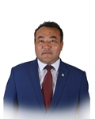

Member of the State Great Khural of Mongolia
Murat Dakey
Member of the State Great Khural of Mongolia MURAT Dakey
Democratic Party
Education, graduated schools, education degree:
2002 - 2007 Technical University of Kazakhstan in Pavlodar city, Thermal plant engineer
2012 - 2013 Political and Management Academy, Public Administration
Working experience:
1987 - 1989 Offset technician, Bayan-Ulgii aimag printing house
1989 - 1995 Director of "Talap cooperative"
1995 - 2006 Director of "Janat LLC"
2006 - 2016 Director of "Energy-Bayan-Ulgii company". LLC
2016 Member of the State Great Hural (Parliament) of Mongolia
Awards:
2009 Order of “Red Banner of Labour"
Foreign language knowledge:
Russian